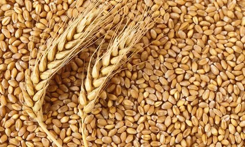
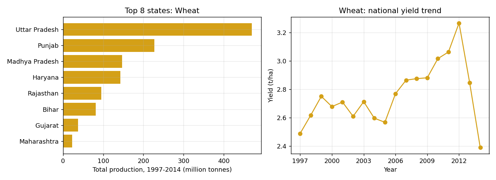

Wheat is a grass widely cultivated for its seed, a cereal grain that is a worldwide staple food. The many species of wheat together make up the genus Triticum the most widely grown is common wheat (T. aestivum). The archaeological record suggests that wheat was first cultivated in the regions of the Fertile Crescent around 9600 BCE. Botanically, the wheat kernel is a type of fruit called a caryopsis. Wheat is grown on more land area than any other food crop (220.4 million hectares or 545 million acres, 2014). World trade in wheat is greater than for all other crops combined. In 2020, world production of wheat was 761 million tonnes (839 million short tons; 1.7 trillion pounds), making it the second most-produced cereal after maize.[8] Since 1960, world production of wheat and other grain crops has tripled and is expected to grow further through the middle of the 21st century. Global demand for wheat is increasing due to the unique viscoelastic and adhesive properties of gluten proteins, which facilitate the production of processed foods, whose consumption is increasing as a result of the worldwide industrialization process and the westernization of the diet.Cultivation and repeated harvesting and sowing of the grains of wild grasses led to the creation of domestic strains, as mutant forms ('sports') of wheat were preferentially chosen by farmers. In domesticated wheat, grains are larger, and the seeds (inside the spikelets) remain attached to the ear by a toughened rachis during harvesting

States with more than 100,000 ha in total

Source: district-wise crop production data (data.gov.in via Kaggle), cleaned and analysed with SQL and Python.